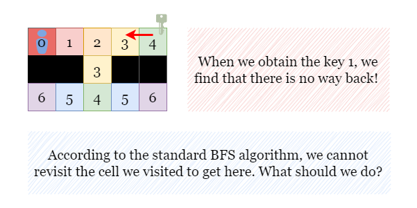

If you are not familiar with Breadth-First Search (BFS) algorithms, please refer to our explore cards: Breadth-First Search Explore Card. We will focus on the usage in this article and not the implementation details.
BFS is a graph traversal algorithm that visits all the vertices of a graph in breadth-first order. It is a suitable choice for finding the shortest path between two vertices of a graph, which is applicable to this problem. However, a regular BFS cannot solve this problem. Let's examine the issue using the example shown above.
We can easily identify the shortest path, but when we apply a regular BFS, we encounter a problem. When we reach
grid[0][4] and collect key a, we discover that there is no way back since revisiting a
cell is not allowed in BFS.

Hence, our BFS must differentiate between different key-holding states. Within the same state, we
cannot revisit a cell. However, two searchings between different key-holding states are entirely independent. For
instance, we start with having no keys, and the current states are denoted as (have key a, have key b) = (0,
0).
We pick up key a, and our state changes to (1, 0). Consequently, the following BFS is based
on the new state, implying that the cells visited in the previous state (0, 0) can be visited again.
In summary, we will perform BFS on multiple identical grids, each representing a distinct key-holding state. When we pick up a new key, we will switch to the grid corresponding to the new state and perform BFS on that grid.
Here are some additional details to consider:
How do we update each BFS?
Similar to a regular BFS where we use (row, col, distance) to represent the distance of each cell. In
this case, we also need to include the key-holding states as an additional parameter, so the states in the queue are
in the format of (row, col, key-holding state, distance). In order to save all states with their
key-holding states, we can initialize a hash map of sets seen, which tracks the visited cells in each
state. Specifically, seen[key-holding states] represents all the visited cells with this key-holding
state.
How can we represent each key-holding state?
Instead of using mutable and iterable objects like lists or sets to collect keys, we can use a bit mask to represent
all the collected keys, which can greatly save time and space. Since there are 26 letters in the
English alphabet, we can use an integer variable (let's call it keys) to represent the current
key-holding states. Each bit of this variable can represent one key, such that if the ithi^{th}
bit is 1, it implies that we have collected the key for the letter corresponding to the ithi^{th}
letter. For example, keys=6=1102\text{keys} = 6 = {110}_2
indicates that we have collected the second key b and the third key c.
When we collect a new key, we can update keys by setting the corresponding bit to 1. For
example, if we pick up the key b, we can update keys as follows: keys = keys | (1
<< (ord('b') - ord('a'))) Here ord represents the integer representation of the
character, we subtract with ord('a') to make it 0-indexed.
For instance, suppose that our previous key-holding state is keys=6=1102\text{keys} = 6 = {110}_2.
By picking up the key a, we can update keys as keys=1102∣12=1112=7\text{keys} = {110}_2 | 1_2 = 111_2 = 7.
This operation sets the 0th0^{th}
bit to 1, which represents the key for the letter a.
How can we determine if we can visit a locked cell?
Similar to updating key-holding state when we pick up a new key, we need to check if we have collected the
corresponding key when encountering a lock. To achieve this, we check if the ithi^{th}
bit of keys is set to 1. For example, suppose that we encounter the lock C
with the state as key = 7, we can verify that we have collected the key c by checking the
value of key & (1 << (ord('C') - ord('A'))). The result is 1, which denotes that
we have collected the key c and can visit this cell.
Traverse over grid and do the following:
collect all keys and locks in key_set and lock_set so we can check if a
square is a key or lock easily.
build the state that represents all keys.
find the starting position.
Initialize a queue queue and a hash map seen for BFS under different states. Start
with the starting position.
While queue is not empty, dequeue a state (cur_row, cur_col, keys, distance).
Generate all possible moves from the current cell (up, down, left, and right), and for each move, check if it leads to a valid cell:
If the move leads to an unseen key, we can update the key-holding state by picking up this key. If we
have collected all the keys, return distance + 1, otherwise, add this new state to
queue and seen.
If the move leads to a lock and we don't have the corresponding key, skip this move.
If the move leads to a new state, add it to queue and seen.
Repeat steps 3 and 4 until either all cells under all states have been visited or there is no path to collect
all the keys. If there is no path to collect all the keys, return -1.
Java
class Solution {
public int shortestPathAllKeys(String[] grid) {
int m = grid.length, n = grid[0].length();
Queue queue = new LinkedList<>();
int[][] moves = new int[][] {{0, 1}, {1, 0}, {-1, 0}, {0, -1}};
// seen['key'] is only for BFS with key state equals 'keys'
Map>> seen = new HashMap<>();
Set keySet = new HashSet<>();
Set lockSet = new HashSet<>();
int allKeys = 0;
int startR = -1, startC = -1;
for (int i = 0; i < m; i++) {
for (int j = 0; j < n; j++) {
char cell = grid[i].charAt(j);
if (cell >= 'a' && cell <= 'f') {
allKeys += (1 << (cell - 'a'));
keySet.add(cell);
}
if (cell >= 'A' && cell <= 'F') {
lockSet.add(cell);
}
if (cell == '@') {
startR = i;
startC = j;
}
}
}
// [row, column, key state, distance]
queue.offer(new int[] {startR, startC, 0, 0});
seen.put(0, new HashSet<>());
seen.get(0).add(new Pair<>(startR, startC));
while (!queue.isEmpty()) {
int[] cur = queue.poll();
int curR = cur[0], curC = cur[1], keys = cur[2], dist = cur[3];
for (int[] move : moves) {
int newR = curR + move[0], newC = curC + move[1];
// If this cell (newR, newC) is reachable.
if (newR >= 0 && newR < m && newC >= 0 && newC < n && grid[newR].charAt(newC) != '#') {
char cell = grid[newR].charAt(newC);
// If it is a key:
if (keySet.contains(cell)) {
// If we have collected it before, no need to revisit this cell.
if (((1 << (cell - 'a')) & keys) != 0) {
continue;
}
// Otherwise, we can walk to this cell and pick it up.
int newKeys = (keys | (1 << (cell - 'a')));
// If we collect all keys, return dist + 1.
// Otherwise, just add this state to seen and queue.
if (newKeys == allKeys) {
return dist + 1;
}
seen.putIfAbsent(newKeys, new HashSet<>());
seen.get(newKeys).add(new Pair<>(newR, newC));
queue.offer(new int[] {newR, newC, newKeys, dist + 1});
}
// If it is a lock and we don't have its key, continue.
if (lockSet.contains(cell) && ((keys & (1 << (cell - 'A'))) == 0)) {
continue;
}
// We can walk to this cell if we haven't been here before with the same key state.
else if (!seen.get(keys).contains(new Pair<>(newR, newC))) {
seen.get(keys).add(new Pair<>(newR, newC));
queue.offer(new int[] {newR, newC, keys, dist + 1});
}
}
}
}
return -1;
}
}
Python
class Solution:
def shortestPathAllKeys(self, grid: List[str]) -> int:
m, n = len(grid), len(grid[0])
queue = collections.deque()
# seen['key'] is only for BFS with key state equals 'keys'
seen = collections.defaultdict(set)
key_set, lock_set = set(), set()
all_keys = 0
start_r, start_c = -1, -1
for i in range(m):
for j in range(n):
cell = grid[i][j]
if cell in 'abcdef':
all_keys += (1 << (ord(cell) - ord('a')))
key_set.add(cell)
if cell in 'ABCDEF':
lock_set.add(cell)
if cell == "@":
start_r, start_c = i, j
# [row, column, key_state, distance]
queue.append((start_r, start_c, 0, 0))
seen[0].add((start_r, start_c))
while queue:
cur_r, cur_c, keys, dist = queue.popleft()
for dr, dc in ((0, 1), (1, 0), (-1, 0), (0, -1)):
new_r, new_c = cur_r + dr, cur_c + dc
# If this cell (new_r, new_c) is reachable.
if 0 <= new_r < m and 0 <= new_c < n and grid[new_r][new_c] != '#':
cell = grid[new_r][new_c]
# If it is a key we haven't picked up yet
if cell in key_set and not ((1 << (ord(cell) - ord('a'))) & keys):
new_keys = (keys | (1 << (ord(cell) - ord('a'))))
# If we collect all keys, return dist + 1.
# Otherwise, just add this state to seen and queue.
if new_keys == all_keys:
return dist + 1
seen[new_keys].add((new_r, new_c))
queue.append((new_r, new_c, new_keys, dist + 1))
# If it is a lock and we don't have its key, continue.
elif cell in lock_set and not (keys & (1 << (ord(cell) - ord('A')))):
continue
# We can walk to this cell if we haven't been here before with the same key state.
elif (new_r, new_c) not in seen[keys]:
seen[keys].add((new_r, new_c))
queue.append((new_r, new_c, keys, dist + 1))
return -1
Let m×nm \times n be the size of grid and kk
be the number of keys.
Time complexity: O(m⋅n⋅2k)O(m \cdot n \cdot 2^k)
Space complexity: O(m⋅n⋅2k)O(m \cdot n \cdot 2^k)
seen. There are at most m×nm \times n cells, and each cell can have 2k2^k
possible key-holding states, so the maximum amount of space required is proportional to the product of
the number of cells and the number of key-holding states.